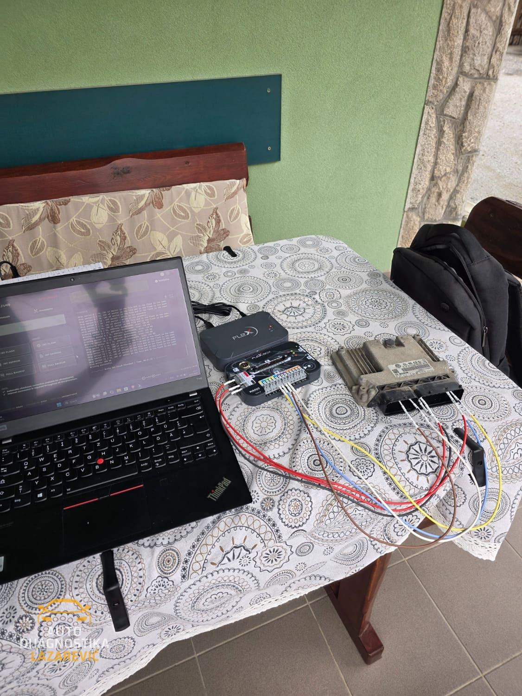

O Nama
Vaš pouzdan partner za auto dijagnostiku i elektroniku vozila
Ko Smo Mi
Auto Dijagnostika Lazarević je specijalizovana servisna radnja fokusirana isključivo na elektronsku dijagnostiku i programiranje vozila. Naš tim čine stručnjaci sa višegodišnjim iskustvom u radu sa najsavremenijom dijagnostičkom opremom.
Razumemo da je moderna elektronika vozila kompleksna, te da svaki problem zahteva precizno dijagnostikovanje i stručnu intervenciju. Zato kontinuirano ulažemo u opremu, edukaciju i praćenje najnovijih tehnologija u automobilskoj industriji.
Naš Pristup
Ne verujemo u "pokušavanja" i "možda će proći". Svaki problem prvo precizno dijagnostikujemo, zatim jasno objašnjavamo šta je uzrok i koje je rešenje. Tek nakon vaše saglasnosti pristupamo intervenciji.
Radimo transparentno - bez skrivenih troškova, bez nepotrebnih intervencija. Ako problem može da se reši jeftinije, mi ćemo vam to reći.

Naša Oprema
Koristimo isključivo profesionalnu dijagnostičku opremu
- Originalni Dijagnostički Alati
- Koristimo profesionalne dijagnostičke alate
- ECU Programeri
- Napredni uređaji za čitanje, programiranje i kloniranje ECU modula sa podrškom za sve proizvođače čipova.
- Pristup Bazi Podataka
- Direktan pristup tehničkim bazama podataka proizvođača.
- Mobilna Dijagnostička Stanica
- Kompletna dijagnostička oprema prilagođena za rad na terenu. Dolazimo do vas sa profesionalnom opremom.
- Magic Motorsport Flex
- Mogućnost otključavanja računara serija MD1 i MG1, kao i rad sa svim dostupnim protokolima uključujući i SID212Evo.
Zašto Baš Mi
- Kontinuirana Edukacija
- Automobilska industrija se brzo razvija. Novi modeli dolaze sa novom elektronikom, novim protokolima i novim sistemima. Zato kontinuirano pratimo tehničke novitete i redovno ažuriramo našu opremu.
- Poverenje i Poštenje
- Naš posao je izgrađen na poverenju. Mnogi naši klijenti dolaze po preporuci jer znaju da će dobiti pošten odgovor i kvalitetnu uslugu. Ne nudimo rešenja koja ne funkcionišu, ne naplaćujemo usluge koje nisu potrebne.
- Podrška Nakon Usluge
- Naš odnos sa klijentima ne prestaje nakon izvršene usluge. Dostupni smo za sva pitanja, nedoumice ili dodatnu podršku. Ako se pojavi bilo kakav problem, tu smo da ga rešimo.
- Fleksibilnost
- Razumemo da vaše vreme nije uvek usklađeno sa standardnim radnim vremenom. Zato nudimo zakazivanje po dogovoru i dolazak na vašu adresu kada vama odgovara.
Želite Da Saznate Više?
Kontaktirajte nas i uverite se u naš profesionalan pristup